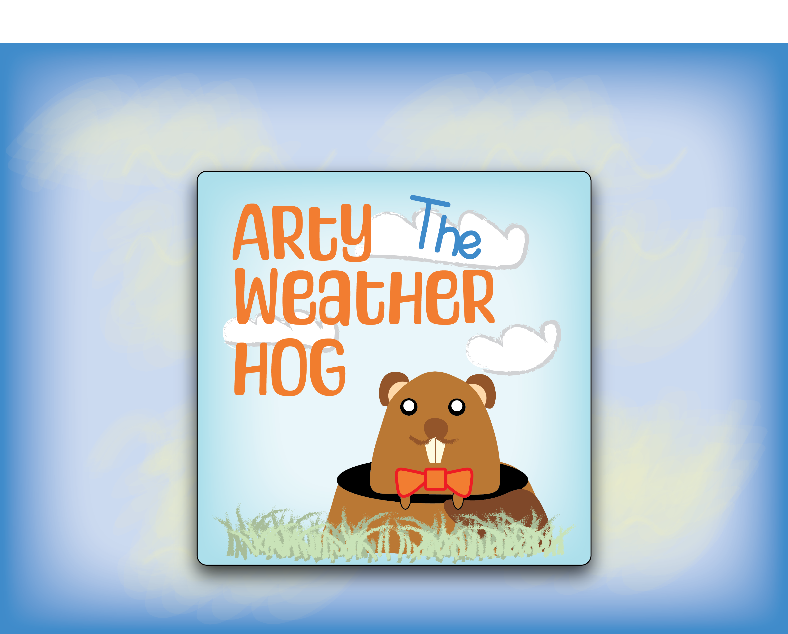

Arty The Weather Hog

Project details
For my Graphic Design class, I was tasked with creating an app concept either travel, weather, or fitness. My personal fascination with weather is the reason why I choose to create a weather app. Thinking through the concepts of different weather apps, I knew a few things; 1) I didnt want to create just another general weather app, 2) I wanted my app to be educational and geared for children 3) I wanted to use a groundhog for the mascot. With these concepts in mind I set out the create Arty The Weather Hog. An educational weather app inspired by groundhog's day.
Goals/Vision
My biggest goal was to make Arty easy for children to use. I did this by using child friendly language, having Arty guide the children throughout the app, and making it engaging for children, so they'll want to come back. I utilized child friendly graphics, and a gender nueatral color pallete as, to make the app more appealing to all genders.
App Functionality
"Arty the Weather Hog" is meant to function the same as a noraml weather app, but with a bit more reasources to help foster the children's curiosity. They can look up daily weather for their location, learn to read weather radar, explore diffrent weather phenomenon, learn cool facts about weather, and set up weather alarts. All these functions are meant to be engaging for children, so they'll want to share their new found knowledge.